Setting up AWS Cloud for InfluxDB
In this post you can learn the steps you need to set up InfluxDB on an AWS EC2 instance.
For better comprehension, this posts is structured into the following sections:
- Set up an AWS account and an EC2 Virtual Server
- Set up an AWS EC2 instance
- Set up InfluxDB on you EC2 instance
- Try out InfluxDB on your EC2 instance
Set up an EC2 Virtual Server
In this section we will set up an EC2 Virtual Server. After this step we can create our EC2 instance. This phase consists of the following steps:
- Set up an AWS account
- Set up an EC2 key pair
- Set up an AWS user
- Install and set up the AWS command line client (AWS CLI) on your system
Set up an AWS account
In case you do not have an AWS account, you can create one for free.
Select the appropriate region:
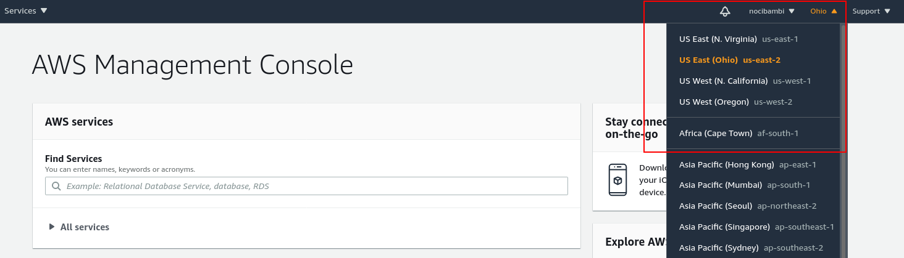
aws region select
Set up an EC2 Key pair
In order to access your cloud server you need to set up a proper authentication by generating a key pair.
Search for “EC2” in the Find Services search box and select EC2 (Virtual Servers in the Cloud). (Note that you have to provide credit card information and that it may take up to 24 hours for amazon to activate):
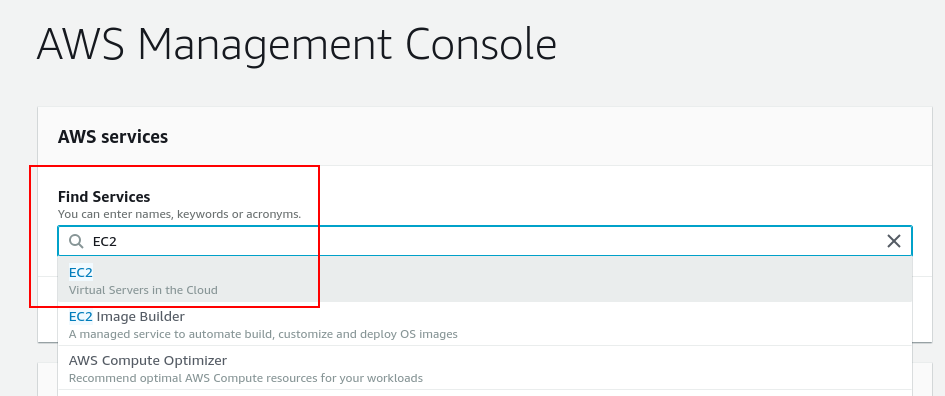
aws ec2 select This menu contains most of the EC2-related services so we will work here for a big part of this tutorial.
Select Key Pairs and create a key pair:
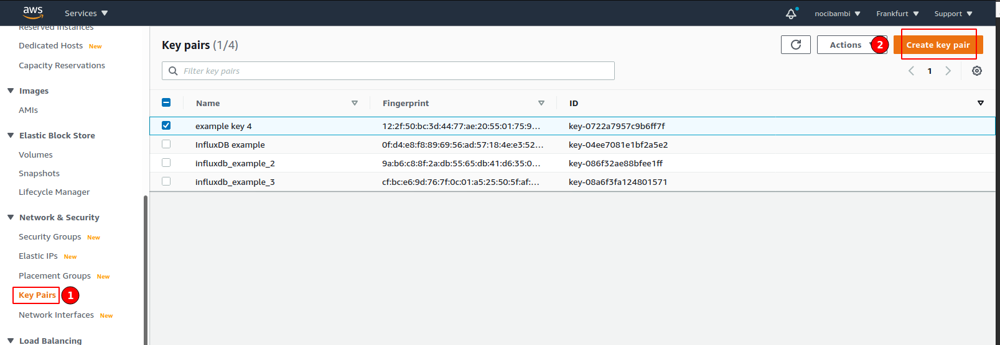
Create key pair Download the keys.
Make the key readable only by the owner. Navigate to the folder to where you downloaded your key and change the key’s permissions:
chmod 400 name-of-the-key.pem
Set up an AWS user
After creating a key pair, you also need to create a user and assign it to a user group with the necessary permissions.
Open IAM (Identity and Access Management) from Services:
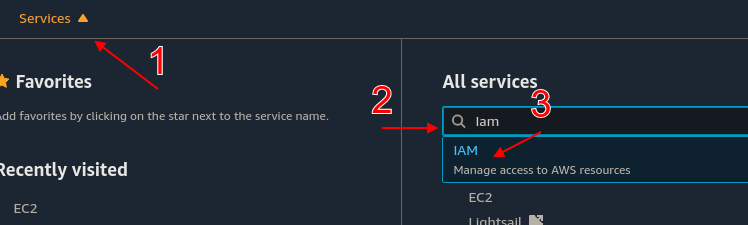
open-aim Select Add user:
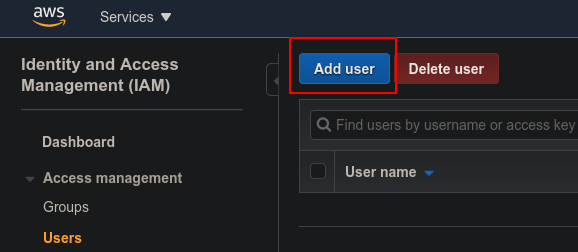
iam-new-user Name the user and add access rights to it:
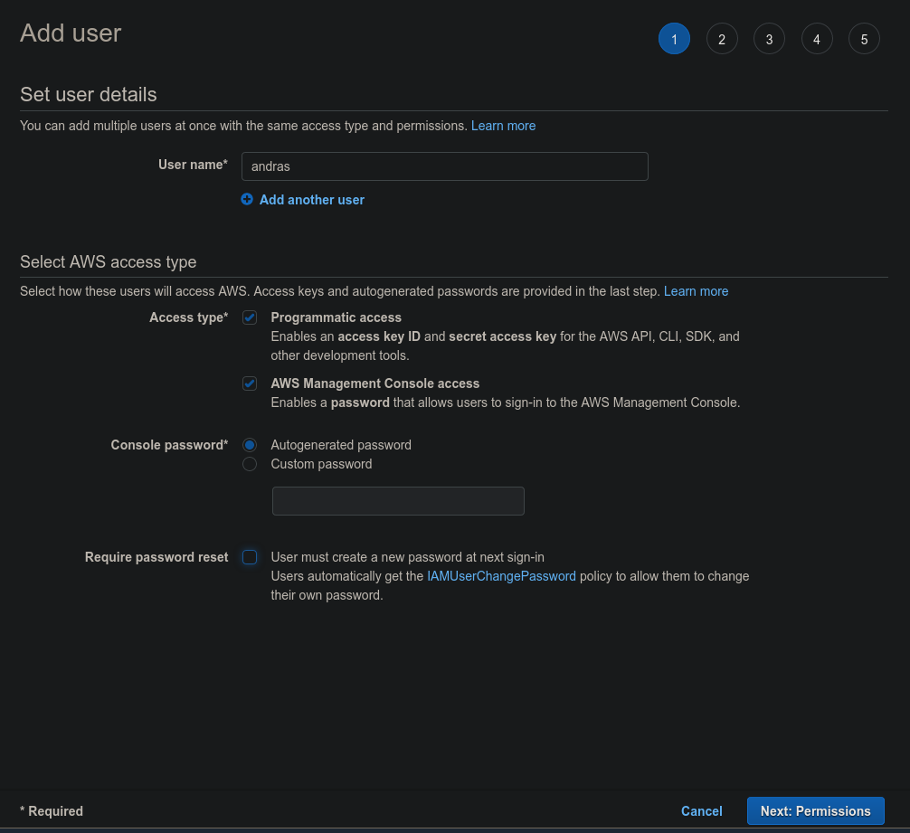
iam-new-user-access On the Set Permissions screen, click on Add user to group and Create a group:
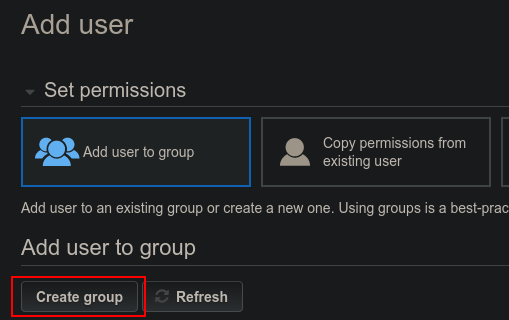
iam-new-user-new-group Define a name and add a policy for the new group:
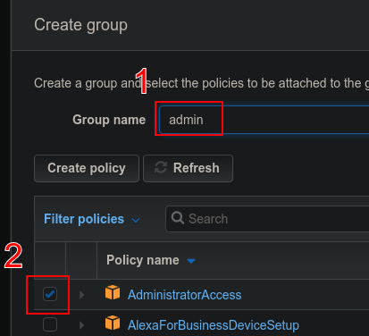
iam-new-group At the end of the process, you will see your access details:
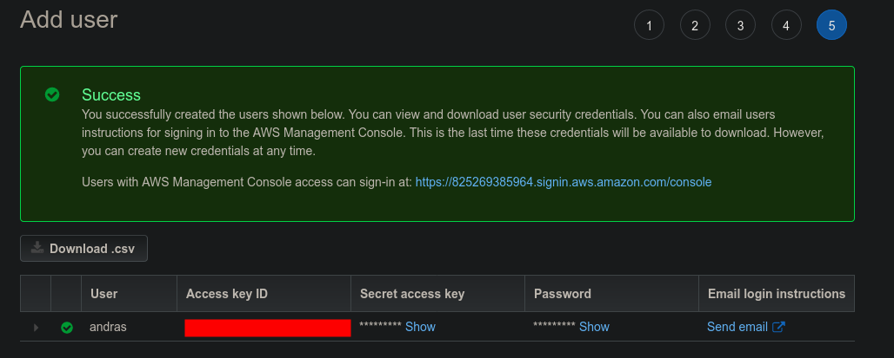
iam-new-user-success Here, write down somewhere your Access Key ID and your Secret Access Key as you will need them in a later step and you will not be able to regenerate it.
Now, you have set up a user and credentials. In the next step, you will install the AWS Command Line Interface on your system.
Set up AWS CLI on your system
The AWS CLI will allow you to configure and access your AWS EC2 instance from the terminal.
Install the AWS CLI on your system.
On a linux machine, you can do this as here:
curl "https://awscli.amazonaws.com/awscli-exe-linux-x86_64.zip" -o "awscliv2.zip" unzip awscliv2.zip sudo ./aws/installFor other systems and for further instructions see this guide.
Verfify the version you installed:
$ aws --version aws-cli/2.1.2 Python/3.7.3 Linux/5.4.0-54-generic exe/x86_64.ubuntu.20Create a folder where you will store your keys and your yaml configuration.
mkdir ~/Projects/influxdb_aws_cloudformation cd ~/Projects/influxdb_aws_cloudformation mv ~/Downloads/name-of-the-key.pem . touch config.ymlConfigure AWS with
aws configure. Here you need to add your Access Key ID, your Secret Access Key (that you generated for your user at the IAM), and the region name (e.g.eu-central-1). You can skip the output format.
Now you have everything you need to set up your EC2 instance. This is what we will do in the next step.
Set up an AWS EC2 instance
In this section we will go through the steps to create your EC2 instance. This section consists of the following steps:
- Identify and EC2 image to use
- Define your stack’s resources
- Create an AWS Cloud Formation stack
- Connect to your instance
Find an EC2 image
Open the Amazon AWS Marketplace.
Find a public image
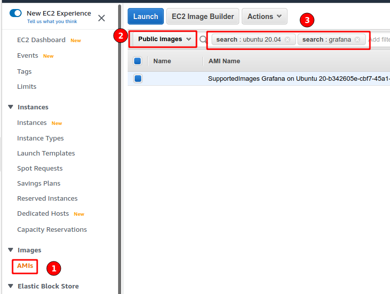
Find public image
If you are not
Define resources
Resources Logical ID Instance properties AMI (Amazon Machine Image) ID
Resources:
Appnode:
Type: AWS::EC2::Instance
Properties:
InstanceType: t2.nano
ImageId: ami-06a719e5f8e22c33b # The AMI instance ID
Keyname: InfluxDB_AWS_example # The name of your key pair
SecurityGroups:
- !Ref AppnodeSecurityGroup # Reference the security group defined belowYou need to define a security group. Security groups act as virtual firewalls for your incoming/outgoing traffic with the help of rules. You can read more about them here. Here, we define an inbound security group. For particular rules, see here.
We define the security group and link it to our app node definition with the Ref function.
# Define the security group
AppnodeSecurityGroup:
Type: AWS::EC2::SecurityGroup
Properties:
GroupDescription: SSH enabled app nodes
# Inbound security rule
# Expose the HTTP port 80 with tcp to inbound traffic from andy Ipv4 addresses
SecurityGroupIngress:
- IpProtocol: tcp
FromPort: '80'
ToPort: '80'
CidrIp: 0.0.0.0/0Define Bash script to install docker and influxdb on the image.
The full yaml:
Resources:
AppNode:
Type: AWS::EC2::Instance
Properties:
InstanceType: t2.micro
ImageId: ami-03d85bfa79ad10274
KeyName: InfluxDB_AWS_example
SecurityGroups:
- !Ref AppNodeSG
AppNodeSG:
Type: AWS::EC2::SecurityGroup
Properties:
GroupDescription: for the app nodes that allow ssh
SecurityGroupIngress:
- IpProtocol: tcp
FromPort: '80'
ToPort: '80'
CidrIp: 0.0.0.0/0
- IpProtocol: tcp
FromPort: '22'
ToPort: '22'
CidrIp: 0.0.0.0/0Create a Cloud Formation stack
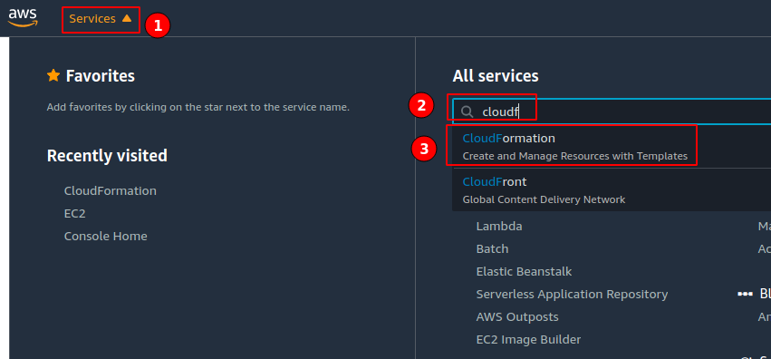
Select Cloudformation 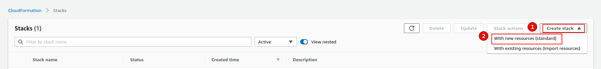
Select Create Stack 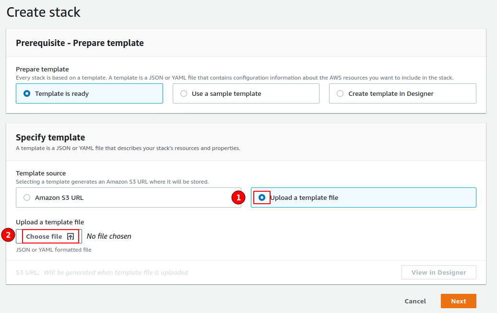
Upload Template - On the rest of the screens the only thing you have to do is to name the stack, you can skip the rest of the options.
aws cloudformation create-stack \
--stack-name influxdb-trial-stack \
--region eu-central-1 \
--template-body file://$PWD/stack.yamlGo back to the EC2 services page and find the instances menu. There you will be able to see your newly created instance. Wait until it finishies initialization and has all of its checkes passed.
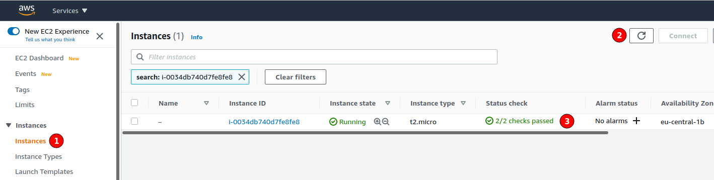
Connect to your instance
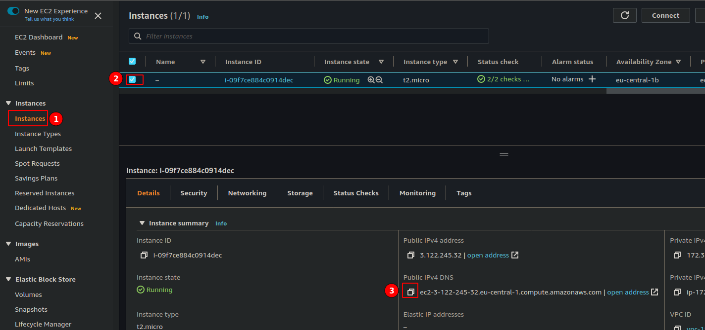
Create a connection to our instance:
ssh -v -i InfluxDB_AWS_example.pem \
ubuntu@ec2-3-122-XXX-XX.eu-central-1.compute.amazonaws.comInstall and set up InfluxDB on the EC2 instance
Install InfluxDB
wget https://dl.influxdata.com/influxdb/releases/influxdb_2.0.2_amd64.deb
sudo dpkg -i influxdb_2.0.2_amd64.debStart the influxdb service.
sudo systemctl start influxdbSetup InfluxDB configuration settings
influx setupHere you need to add a username, a password, and name your organization and your primary bucket. You can skip on the retention period question.
Try out InfluxDB
$ influx bucket list
ID Name Retention Organization ID
61003b98acb988da _monitoring 168h0m0s aca7861debe89fb5
62a458b6d3091276 _tasks 72h0m0s aca7861debe89fb5
d4e2f2ae14c34289 test_bucket 1h0m0s aca7861debe89fb5$ date +%s
1606723341influx write -b test_bucket -o nocibambi@gmail.com -p s 'test_measurement,host=testHost testField="testFieldValue" 1606723341'Use Ctrl-D to execute the query.
$ influx query
from(bucket: "test_bucket") |> range(start:-1h)
Result: _result
Table: keys: [_start, _stop, _field, _measurement, host]
_start:time _stop:time _field:string _measurement:string host:string _time:time _value:string
------------------------------ ------------------------------ ---------------------- ---------------------- ---------------------- ------------------------------ ----------------------
2020-11-30T07:03:07.010273692Z 2020-11-30T08:03:07.010273692Z testField test_measurement testHost 2020-11-30T08:02:21.000000000Z testFieldValue